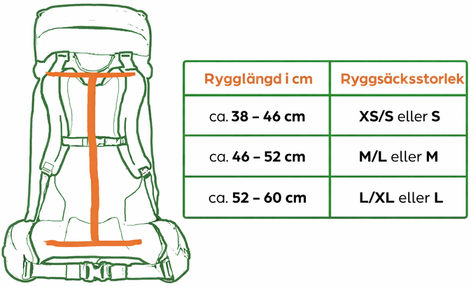
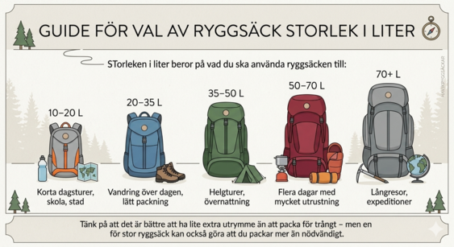

Kolla storlek på ryggsäck

Kolla vad för storlek som passar dig



Att välja rätt storlek på ryggsäcken är avgörande för komfort och för att undvika skador. En ryggsäck som inte passar din kropp kan ge fel belastning på rygg, axlar och höfter, vilket snabbt leder till trötthet eller smärta. Med rätt storlek hamnar vikten närmare kroppens tyngdpunkt och fördelas jämnt, vilket gör att du orkar bära längre och röra dig mer naturligt. Det är särskilt viktigt vid vandring eller längre turer, där fel passform annars kan påverka både balans och hållning negativt.
För att testa om en ryggsäck passar bör du börja med att justera alla remmar korrekt. Höftbältet ska sitta stadigt över höfterna och bära största delen av vikten. Axelremmarna ska följa axlarna utan att glipa eller trycka för mycket. När du spänner bröstremmen och toppstramarna ska ryggsäcken ligga nära ryggen och kännas stabil. Testa alltid med vikt i väskan, gärna några kilo, och gå runt en stund. Den ska kännas bekväm även i rörelse, utan att skava eller kännas instabil.


När du väljer ryggsäck är det viktigt att utgå från din rygglängd snarare än din totala kroppslängd. Många ryggsäckar finns i olika storlekar eller med justerbar ryggpanel, vilket gör det lättare att hitta rätt passform. Prova gärna flera modeller och jämför hur de sitter med vikt i. Se till att det finns tillräckliga justeringsmöjligheter för axelremmar, höftbälte och bröstrem. För smalare kroppar kan särskilda modeller med smalare passform vara ett bättre val för ökad komfort och stabilitet.